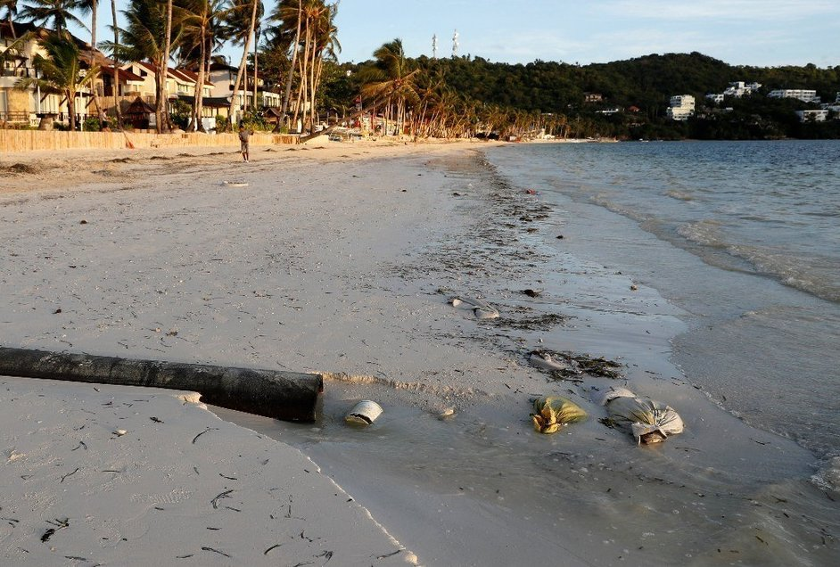

 潔白沙灘、湛藍海水，一望無際的景致和陣陣伴隨的愜意海濤聲── 這是菲律賓長灘島帶給世人的最深印象，在一棵棵隨風飄逸的棕梠樹下， 陽傘點綴了渡假的美好，比基尼和浮潛活動的浪漫， 更勾勒出熱帶海洋的深層魅力與感動。
談到菲律賓旅遊，許多人腦海中都會浮現長灘島， 在總面積僅有10.32平方公里、形狀貌似狗骨頭的小島上， 有著令人悠然神往的恬靜，島上度假飯店林立、 海上活動發達，也有各種商店街甚至賭場之興建計劃。
下一頁